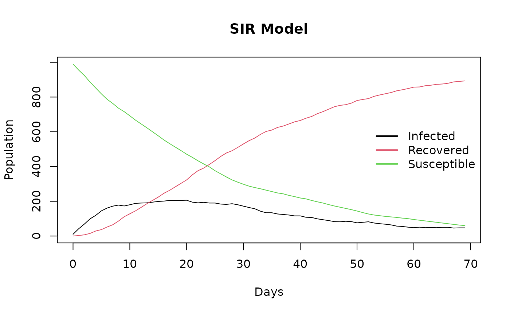

vignette.RmdDespite significant medical advances, infectious diseases continue to prevail worldwide, accounting for over 17 million deaths yearly (WHO). epiworldR is an R package that provides a fast (C++ backend) and highly-customizable framework for building network-based transmission/diffusion agent-based models [ABM]. This package provides valuable information that may aid in making informed, evidence-based policy decisions for the general population and performing complex simulation studies. epiworldR delivers a flexible tool that can capture transmission/diffusion dynamics complexity resulting from agents’ heterogeneity, network structure, transmission dynamics, environmental factors (e.g., policies,) and many other elements. Some key features of epiworldR are the ability to construct multi-disease models (e.g., models of competing multi-pathogens/multi-rumor,) design mutating pathogens, architect population-level interventions, and build models with an arbitrary number of compartments/states (beyond SIR/SEIR.) Moreover, epiworldR is really fast; for example, simulating a SIR model with 100,000 agents for 100 days takes less than \(\frac{1}{3}\) of a second.
library(epiworldR)
model_sir <- ModelSIR(name = "COVID-19", prevalence = 0.01,
infectiousness = 0.9, recovery = 0.1)
# Adding a small world population
agents_smallworld(
model_sir,
n = 1000,
k = 5,
d = FALSE,
p = .01
)
# Running and printing
run(model_sir, ndays = 100, seed = 1912)
#> _________________________________________________________________________
#> Running the model...
#> ||||||||||||||||||||||||||||||||||||||||||||||||||||||||||||||||||||||||| done.
#> done.
model_sir
#>
#> ________________________________________________________________________________
#> SIMULATION STUDY
#>
#> Name of the model : Susceptible-Infected-Recovered (SIR)
#> Population size : 1000
#> Number of entities : 0
#> Days (duration) : 100 (of 100)
#> Number of variants : 1
#> Last run elapsed t : 2.00ms
#> Last run speed : 40.75 million agents x day / second
#> Rewiring : off
#>
#> Virus(es):
#> - COVID-19 (baseline prevalence: 1.00%)
#>
#> Tool(s):
#> (none)
#>
#> Model parameters:
#> - Infectiousness : 0.9000
#> - Prob. of Recovery : 0.1000
#>
#> Distribution of the population at time 100:
#> - (0) Susceptible : 990 -> 0
#> - (1) Infected : 10 -> 9
#> - (2) Recovered : 0 -> 991
#>
#> Transition Probabilities:
#> - Susceptible 0.92 0.08 0.00
#> - Infected 0.00 0.90 0.10
#> - Recovered 0.00 0.00 1.00Begin by specifying the disease name, prevalence, infectiousness, and recovery using the ModelSIR function. This function collects information about the disease which will be spreading through the population. Next, specify the number of individuals in your population (n), (k), (d), and (p). Lastly, run the SIR model for a specfied number of days (ndays) with an optional seed for reproducibility.
plot(model_sir) As evident from the above plot, the SIR model constructed from epiworldR displays the changes in susceptible, infected, and recovered case counts over time (days). After roughly 70 days, the curves flatten.